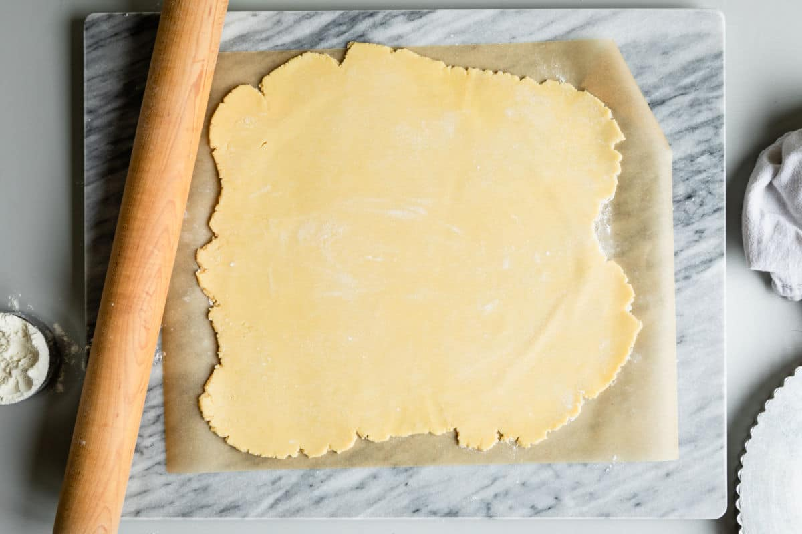
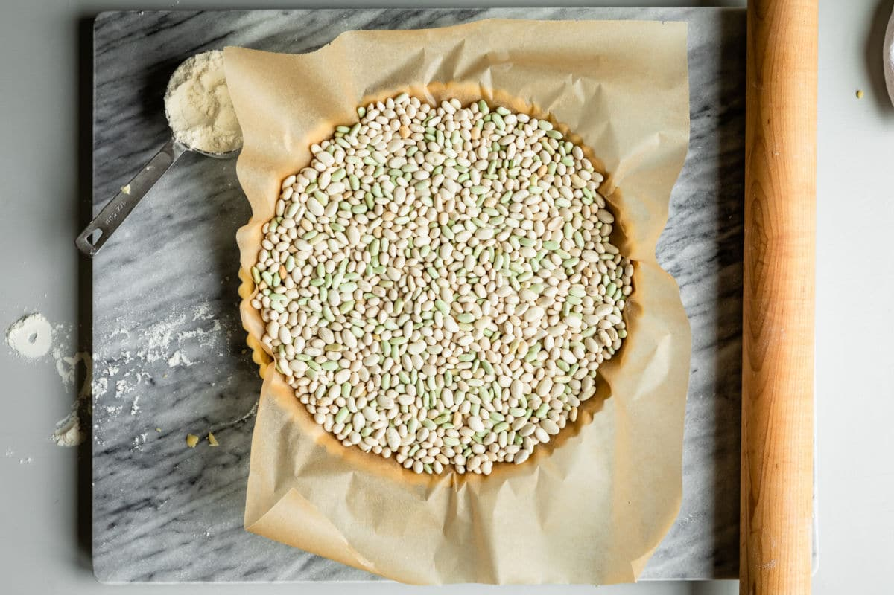

Fresh Fruit Tart
Made By: Chubbycheek
Source By: Culinaryhill
Recipe Ingredients
Ingredients
For the Pastry Cream
- 2 cups whole milk
- 1 cup granulated sugar
- 6 egg yolks
- 1/4 cup cornstarch
- 1/4 teaspoon Salt
- 1 teaspoon vanilla extract
For The Tart Dough
- 7 tablespoons butter softened
- 1/2 cup powdered sugar
- 1 egg
- 1/2 teaspoon vanilla extract
- 1/4 teaspoon Salt
- 1 1/4 cups all-purpose flour sifted
- 1/4 teaspoon baking powder
For the Fruit Tart
1 pint Fresh cut fruit such as strawberries, blueberries, blackberries, raspberries, peaches, mango, and kiwi
Apricot jam melted, as needed
Step-by-step instructions
To make Pastry Cream
- In a medium non-aluminum saucepan over medium heat, heat milk until tiny bubbles appear on the surface, about 6 to 8 minutes (180 degrees). Stir to prevent scalding.
- In a large bowl, whisk together egg yolks and sugar. Whisk in cornstarch and salt. While whisking constantly, pour in half of the hot milk. Whisk in remaining hot milk and return to saucepan.
- Cook over medium heat, whisking constantly, until the mixture thickens to a firm consistency, about 5 to 8 minutes. Whisk in vanilla and pour in to a bowl. Cover with plastic wrap, pressing it directly on to the surface of the pastry cream. Refrigerate until chilled, about 2 to 3 hours.
To make the Tart Dough
- In a standing mixer fit with the paddle attachment, or with an electric mixer by hand, cream the butter and powdered sugar together on medium-high speed until pale and fluffy, about 3 minutes.
- Scrape down the sides of the bowl and add egg. Continue mixing until combined, scraping down the bowl as necessary. Add vanilla and salt and mix until combined.Reduce mixer speed to low. Add flour and baking powder and blend until the dough comes together (do not over-mix).
- Scrape dough onto a piece of plastic wrap. Wrap tightly and chill at least 1 hour.
To blind-bake the Tart Crust
- Preheat oven to 350 degrees. On a lightly floured surface, roll out dough to a thickness of 1/8-inch to 1/4-inch. If the dough crumbles or breaks apart, press it back together with your fingertips.

- Loosely roll the dough around the rolling pin, then gently unroll it over the tart pan, preferably with a removable bottom (9 inches, or substitute a pie plate). Press the dough firmly into the bottom of the pan and up the sides. Trim any excess dough.
- Cover the dough with parchment paper or foil. Fill with pie weights or dried beans (you will need about 2 pounds, see note 4). Bake 12 minutes.

- Remove pie weights or beans and parchment paper or foil. Return to oven and bake until golden brown and fully cooked, about 10 to 15 minutes longer. Cool completely.
To assamble the Fruit Tart
- Fill cooled tart crust with chilled pastry cream. Arrange fruit in a decorative pattern.
- Using a pastry brush, brush fruit with melted apricot glaze (reheat as necessary if glaze cools and becomes too sticky).
Notes
- Vanilla: ½ vanilla bean, split, may be substituted for the vanilla extract in the pastry cream.
- Fruit: Choose an assortment of different types, colors, and shapes. You could also decorate on a theme such as tropical (pineapple, kiwi, mango) or winter citrus (red grapefruit, blood orange, and clementine).
- Apricot jam: Brushing some warmed apricot glaze over your fruit is like adding a shiny top coat. It keeps the fruit hydrated and looking its best. Apple jelly works too. Strawberry jelly tastes good but will tinge the fruit pink.
- Pie weights: Used when blind-baking a crust so the crust stays flat. You can use store-bought pie weights or substitute dried beans (you cannot eat the beans after they’ve been baked). After baking, cool the beans completely and store them in a plastic bag for future baking projects. Yield: This recipe makes 1 (9-inch) tart with 8 slices.
- Storage: Store leftovers covered in the refrigerator for up to 4 days.